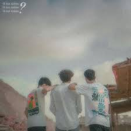

Featured Music: Tu hai kaha
lissen the official audio with lyrics:

Tu hai kaha lyrics
That when I went too far in love کہ جب میں حد سے آگے بڑھ گیا تھا عاشقی میں That is, taking life as a joke یعنی زندگی کو لے رہا مذاق ہی میں Then I found it all in the dust پھر مذاق ہی میں مل گیا سب خاک ہی میں By touching the destination, I was alone on my way back چھو کر آیا منزلیں تو تنہا تھا میں واپسی میں You have filled the cradle as the flowers have broken جیسے پھول توڑے ہوں گے تم نے جھولی بھر کے I am the flower that was left in the branch itself میں وہ پھول جوکہ رہ گیا تھا شاخ ہی میں Like dreams in dreams, bedrooms in eyes جیسے خواب ہی میں خواب گاہیں آنکھ ہی میں What happened from bridge to bridge, you are left only in memory پل سے پل میں کیا ہوا تم رہ گئے بس یاد ہی میں A question arises in my heart sometimes اک سوال مچلتا ہے میرے دل میں کبھی Do I forget you or do I miss you? تجھے میں بھول جاؤں یا تجھے میں یاد کروں؟ Whatever I write, I write with you in mind تجھ ہی کو سوچ کے لکھتا ہوں جو بھی لکھتا ہوں Now that I am writing, then why not ask a question? اب لکھ رہا ہوں تو پھر کیوں نہ اک سوال کروں؟ Let me turn sadness into happiness with this question میں اس سوال سے غم کو بدل دوں خوشیوں میں But what can I do with these inanimate joys? پر ان بے جان سی خوشیوں سے کیا کمال کروں؟ But now the question is also Kamal, you take care of it پر اب سوال بھی کمال، تُو سنبھال لے فالحال Shall I trick this fall? یہ زوال بچھا جال کیا میں چال چلوں؟ Be yourself, I will recognize you چال چل تُو اپنی، میں تجھے پہچان لوں گا I will take only your name in my gatherings میں اپنی محفلوں میں صرف تیرا ہی نام لوں گا You like low tones and just silences تجھے پسند ہے دھیمہ لہجا اور بس خاموشیاں I will hold my own breath for you میں تیرے خاطر اپنی خود سی سانسیں تھام لوں گا Can all your tears be mine? کیا تیرے سارے آنسو میرے ہو سکتے ہیں؟ If so, we can also cry for you ایسا ہے تو تیرے خاطر ہم بھی رو سکتے پیں Just make me laugh when I cry for my sake میرے خاطر میرے رونے پر بس تم ہنس دینا Once behind your smile we can lose everything ایک بار تیرے مسکراہٹ کے پیچھے ہم سب کچھ کھو سکتے ہیں Is there no account of my love? کیا میری محبتوں کا کوئی حساب نہیں ہے؟ Why is there no dream for me in your eyes? کیوں تیرے آنکھوں میں میرے لئے کوئی خواب نہیں ہے؟ What shall I do to you, sorrowful, let me go now تجھے کیا ہی کروں غم زدہ، اب جانے دے That you have no answer for my love کہ تیرے پاس میرے پیار کا جواب نہیں ہے How long has it been, why did you not send the letter? کتنی مدتیں ہوئیں ہیں تم نے خط کیوں نہیں بھیجا؟ I sing, music is not a profession for you گا لیتا ہوں تیرے لئے موسیقی نہیں ہے پیشہ There is no news of your coming now آنے کی خبر ہی نہیں تیری اب Now should I ask the seasons for fear of your coming? اب کیا موسموں سے پوچھوں تیرے آنے کا اندیشہ؟ There are no tears in the eyes آنکھوں میں آنسو نہیں ہے Where are you, where are you not? کہاں ہے تُو، کہاں تُو نہیں ہے؟ The heart doesn't need to know this anymore, just go away دل کو یہ اب جاننا ہی نہیں، بس تم چلے آؤ where are you تُو ہے کہاں؟ In this city of dreams, my heart was looking for you, looking for you خوابوں کے اس شہر میں میرا دل تجھے ڈھونڈتا، ڈھونڈتا It's been a while, I haven't seen you عرصہ ہوا، تجھ کو دیکھا نہیں You don't know where you hid, you hid. تُو نہ جانے کہاں چھپ گیا، چھپ گیا۔۔۔ Let's go again آؤ پھر سے ہم چلیں Hold this hand, reduce this distance تھام لو یہ ہاتھ، کر دو کم یہ فاصلے No destination, no route نہ پتہ ہو منزلوں کا، نہ ہو راستے You are, I am, both of us meet again under the wires تُو ہو، میں ہوں، بھیٹے دونوں پھر ہم تاروں کے تلے There is neither morning nor day نہ صبح ہو پھر، نہ ہی دن ڈھلے Can't say anything, can't hear anything کچھ نہ کہہ سکیں، کچھ نہ سن سکیں All things remain in the heart باتیں ساری وہ دل میں ہی رہیں What do you know? What are you to me? تم کو کیا پتہ ہہ کیا ہو تم میرے لئے You are the galaxy کہکشاں ہو تم You are like fairy tales کہانیوں کی پریوں کی طرحاں ہو تم No one like you can come into me مجھ میں آ سکے نہ کوئی اس طرحاں ہو تم You believe me or you think ہو یقین تم میرا یا پھر گمان ہو تم You are a native آشیاں ہو تم I am a wandering traveler and you are the home میں بھٹکا سا مسافر اور مکاں ہو تم You are the only way to my destination میری منزلوں کا ایک ہی راستہ ہو تم The heart is looking for you, tell me where are you? ڈھونڈتا ہے دل تجھے، بتا کہاں ہو تم؟ Wherever you are ہو جہاں کہیں بھی Come so my tears can stop آؤ پاس تاکہ آنسو میرے تھم سکیں I miss you every moment now یاد آ رہے ہو تم مجھے اب ہر لمحے What about a life that you ایسی زندگی کا کیا جو تم Being in life could not become my life زندگی میں ہو کے میری زندگی نہ بن سکے Keep thinking or forget you now? سوچتا رہوں یا بھول جاؤں اب تمہیں؟ If you will not be able to meet, then how can I want you now? تم مل ہی نہ سکو گے تو پھر کیسے چاہوں اب تمہیں؟ All your dreams will be connected in a bridge تیرے سارے خواب پل میں جوڑ دیں گے In which you will not live, then they will break their hearts جس میں تُو ہی نہ بسے گا پھر وہ دل ہو توڑ دیں گے They will leave the city in which you will not be چھوڑ دیں گے وہ شہر کہ جس میں تم نہ ہو گے The house of all the longings will be broken ٹوٹ جائیں گے مکاں وہ سارے حسرتوں کے You will be able to pass the bridge that is with you گزرے پل جو ساتھ تیرے وہ پل ہیں بس سکوں گے Meet you now in ways that you will not meet again مل لوں اب تم اس طرحاں سے کہ پھر نہیں ملو گے You were with me تُو ہی تھا ساتھ میں میرے How will I live alone? کیسے میں جیوں گا اکیلے؟ Tare gun gun ke morning has come تارے گن گن کے ہو گئی ہے صبح where are you تُو ہے کہاں؟ In this city of dreams, my heart was looking for you, looking for you خوابوں کے اس شہر میں میرا دل تجھے ڈھونڈتا، ڈھونڈتا It's been a while, I haven't seen you عرصہ ہوا، تجھ کو دیکھا نہیں You don't know where you hid, you hid. تُو نہ جانے کہاں چھپ گیا، چھپ گیا۔۔۔ You'll always stay with me You'll always stay with me